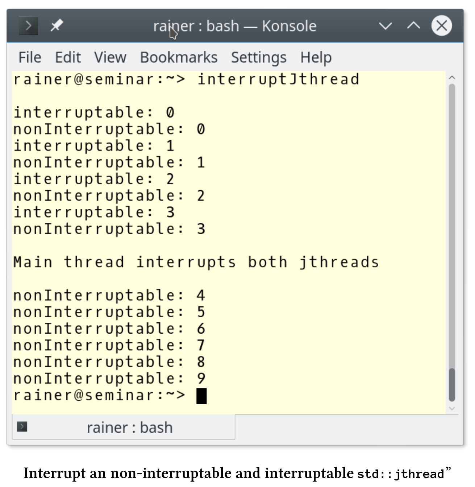

可协作中断的线程
std::jthread代表协作线程，除了C++11添加的std::thread外，std::jthread还可以自动汇入启动的线程，并发出中断信号。它的特性在提案P0660R8中进行了详细描述：可中断的协程。
自动汇入
下面std::thread的行为并不乐观。如果std::thread仍是可汇入的，则在其析构函数中调用std::terminate。如果调用了thre .join()或thre .detach()，则线程thr是可汇入的。
// threadJoinable.cpp
#include <iostream>
#include <thread>
int main() {
std::cout << std::endl;
std::cout << std::boolalpha;
std::thread thr{ [] {std::cout << "Joinable std::thread" << std::endl; } };
std::cout << "thr.joinable(): " << thr.joinable() << std::endl;
std::cout << std::endl;
}
程序执行的时候，会崩溃掉。

运行了两次，std::thread都会非法终止。第二次运行时，线程thr有显示了消息:“Joinable std::thread”。
下一个示例中，我将头文件<thread>替换为“jthread.hpp”。并使用C++20标准中的std::jthread。
// jthreadJoinable.cpp
#include <iostream>
#include "jthread.hpp"
int main() {
std::cout << std::endl;
std::cout << std::boolalpha;
std::jthread thr{ [] {std::cout << "Joinable std::thread" << std::endl; } };
std::cout << "thr.joinable(): " << thr.joinable() << std::endl;
std::cout << std::endl;
}
现在，如果线程thr会在调用析构时还是可汇入的，则会自动汇入。

中断std::jthread
为了理解其中的思想，我举一个简单的例子。
// interruptJthread.cpp
#include "jthread.hpp"
#include <chrono>
#include <iostream>
using namespace ::std::literals;
int main() {
std::cout << std::endl;
std::jthread nonInterruptable([] {
int counter{ 0 };
while (counter < 10) {
std::this_thread::sleep_for(0.2s);
std::cerr << "nonInterruptable: " << counter << std::endl;
++counter;
}
});
std::jthread interruptable([](std::stop_token stoken) {
int counter{ 0 };
while (counter < 10) {
std::this_thread::sleep_for(0.2s);
if (stoken.stop_requested()) return;
std::cerr << "interruptable: " << counter << std::endl;
++counter;
}
});
std::this_thread::sleep_for(1s);
std::cerr << std::endl;
std::cerr << "Main thread interrupts both jthreads" << std::endl;
nonInterruptable.request_stop();
interruptable.request_stop();
std::cout << std::endl;
}
主程序中启动了两个线程nonInterruptable和interruptable(第13行和第22行)。与线程nonInterruptable不同，线程interruptable 会获取一个std::stop_token，并在26行使用它来检查线程是否被中断:stoken.stop_requested()。在中断的情况下返回Lambda函数，然后线程结束。interruptable.request_stop() (第37行)触发线程的结束。而nonInterruptable.request_stop()并没有什么效果。

下面来了解停止令牌、汇入线程和条件变量的更多细节。
停止令牌
jthread的附加功能基于std::stop_token、std::stop_callback和std::stop_source。
std::stop_token , std::stop_source 和std::stop_callback
std::stop_token、std::stop_callback或std::stop_source使其能够异步请求执行停止，或查询执行是否收到了停止信号。可以将std::stop_token传递给操作，然后使用它来主动轮询停止请求的令牌，或者通过std::stop_callback注册回调。停止请求由std::stop_source发送，这个信号影响所有相关的std::stop_token。std::stop_source、std::stop_token和std::stop_callback共享停止状态的所有权，其中request_stop()、stop_requested()和stop_possible()是原子操作。
std::stop_source和std::stop_token组件为停止处理提供了以下属性。
std::stop_source src的成员函数
| 成员函数 | 功能描述 |
|---|---|
| src.get_token() | 如果!stop_possible()，则构造一个不共享stop的stop_token对象状态；否则，构造一个stop_token对象，并共享使用*this的停止状态 |
| src.stop_possible() | 如果停止源可以用于请求停止，则为true |
| src.stop_requested() | 如果其中一个所有者调用了stop_possible()和request_stop()，则为true。 |
| src.request_stop() | 如果!stop_possible()或stop_requested()，则调用没有效果；否则，提出一个停止请求，以便同步调用stop_requested() == true和所有已注册的回调。 |
std::stop_token stoken的成员函数
| 成员函数 | 功能描述 |
|---|---|
| stoken.stop_possible() | 如果后续调用stop_required()将永远不会返回true |
| stoken.stop_requested() | 如果在相关的std::stop_source上调用了request_stop()，则为true，否则为false |
如果std::stop_token临时禁用了，那么可以用默认构造的令牌替换它。默认构造的令牌无效。下面的代码片段展示了，如何禁用和启用线程接受信号的功能。
临时禁用一个std::stop_token
std::jthread jthr([](std::stop_token stoken){
...
std::stop_token interruptDisabled;
std::swap(stoken, interruptDisabled);
...
std::swap(stoken, interruptDisabled);
...
}
std::stop_token interruptDisabled是无效的。这意味着，从第4行到第5行停止令牌被禁用，第6行才启用。
下面的示例展示了回调的用法。
// invokeCallback.cpp
#include "jthread.hpp"
#include <chrono>
#include <iostream>
#include <vector>
using namespace ::std::literals;
auto func = [](std::stop_token stoken) {
int counter{ 0 };
auto thread_id = std::this_thread::get_id();
std::stop_callback callBack(stoken, [&counter, thread_id] {
std::cout << "Thread id: " << thread_id
<< "; counter : " << counter << std::endl;
});
while (counter < 10) {
std::this_thread::sleep_for(0.2s);
++counter;
}
};
int main() {
std::cout << std::endl;
std::vector<std::jthread> vecThreads(10);
for (auto& thr : vecThreads)thr = std::jthread(func);
std::this_thread::sleep_for(1s);
for (auto& thr : vecThreads)thr.request_stop();
std::cout << std::endl;
}
这10个线程中的每个都调用Lambda函数func(第10 - 21行)。第13 - 16行中的回调显示线程id和计数器。由于主线程的睡眠时间为1秒，子线程的睡眠时间为1秒，所以调用回调时计数器为4。request_stop()会在每个线程上触发回调。

汇入线程
std::jhread是一个std::thread变种，它具有发出中断信号，并自动汇入的附加功能。为了支持这个功能，它需要一个std::stop_token。
std::jthread jthr停止令牌的成员函数
| 成员函数 | 功能描述 |
|---|---|
| jthr.get_stop_source() | 返回stop_token |
| jthr.request_stop() | 与src.request_stop()相同 |
condition_variable_any成员函数wait的新重载
std::condition_variable_any的三个wait变体wait_for和wait_until将有新的重载，新的重载会使用std::stop_token。
template <class Predicate>
bool wait_until(Lock& lock,
Predicate pred,
stop_token stoken);
template <class Clock, class Duration, class Predicate>
bool wait_until(Lock& lock,
const chrono::time_point<Clock, Duration>& abs_time,
Predicate pred,
stop_token stoken);
template <class Rep, class Period, class Predicate>
bool wait_for(Lock& lock,
const chrono::duration<Rep, Period>& rel_time,
Predicate pred,
stop_token stoken);
这个新的重载需要一个谓词函数。该版本在传入的std::stop_token stoken发出中断信号时，得到通知。这三个重载相当于下面的表达式：
// wait_until in lines 1 - 4
while(!pred() && !stoken.stop_requested()) {
wait(lock, [&pred, &stoken] {
return pred() || stoken.stop_requested();
});
}
return pred();
// wait_until in lines 6 - 10
while(!pred() && !stoken.stop_requested() && Clock::now() < abs_time) {
cv.wait_until(lock,
abs_time,
[&pred, &stoken] {
return pred() || stoken.stop_requested();
});
}
return pred();
// wait_for in lines 12 - 16
return wait_until(lock, chrono::steady_clock::now() + rel_time, std::move(pred), std\
::move(stoken));
调用wait之后，可以对停止请求进行检查。
cv.wait_until(lock, predicate, stoken);
if (stoken.stop_requested()){
// interrupt occurred
}